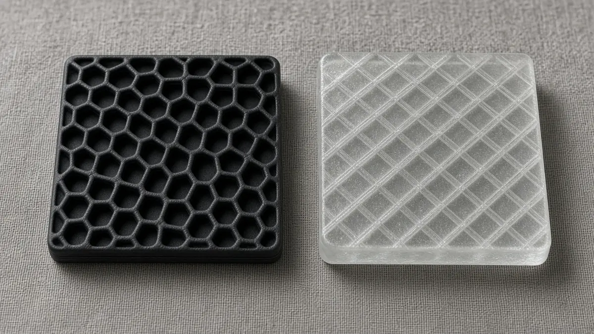

What ML-KEM, ML-DSA and SLH-DSA each do in NIST's post-quantum standards
Short answer: The three post-quantum standards NIST finalized in August 2024 do different jobs. FIPS 203, ML-KEM, is for agreeing a shared secret key. FIPS 204, ML-DSA, is the primary standard for digital signatures. FIPS 205, SLH-DSA, is a second signature method, built on different mathematics, which NIST describes as a backup.
A key-encapsulation mechanism lets two parties derive a shared secret over a public network. NIST says ML-KEM, taken from the CRYSTALS-Kyber submission, is the main standard for general encryption, citing comparatively small keys and speed. ML-DSA, from CRYSTALS-Dilithium, is for signatures that tie a message to a signer and show whether it was changed. SLH-DSA, from SPHINCS+, is also a signature scheme. NIST says it uses a different mathematical approach from ML-DSA and is there as a backup should a weakness in ML-DSA turn up.

The Secretary of Commerce approved FIPS 203, 204 and 205, and the Federal Register notice (89 FR 66052) makes them effective on 14 August 2024. NIST's news post of 13 August 2024 said the documents include the algorithms, instructions for implementing them and the uses they are meant for, and that they were ready to use. Dustin Moody, who leads the project, said "full integration will take time."
In 2022 NIST selected four algorithms to standardize: CRYSTALS-Kyber, CRYSTALS-Dilithium, SPHINCS+ and FALCON. The August 2024 post said a draft based on FALCON, to be named FN-DSA, was still planned. NIST IR 8547, published in October 2026, says the agency is still developing a FIPS for a signature algorithm derived from FALCON, as a further alternative, and it recommends ML-KEM-768 as the default parameter set for FIPS 203. The 2030 and 2035 transition dates are set out in PhotonDispatch's report on that roadmap.
NIST says the new algorithms rest on math problems intended to resist both conventional computers and quantum computers, unlike factoring and discrete logarithms, which underlie widely used schemes such as RSA and elliptic-curve signatures. The agency describes the three 2024 standards as the primary tools for general encryption and for signatures, and says further algorithms are backups rather than a reason to wait.